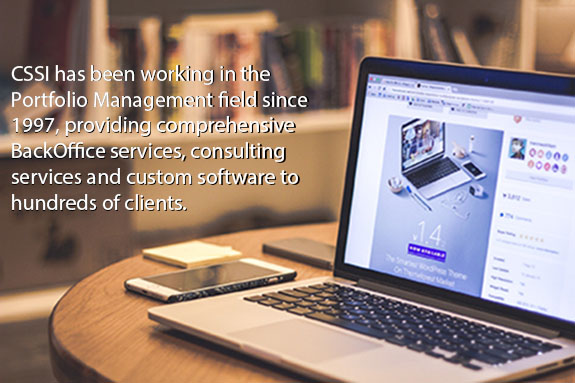

CSSI opened its doors in Norristown, PA in 1995. Our founding mission was to use various screen scraping technologies to front end the mainframe systems of the day. In 1997 customer requests brought us into the sphere of Advent’s Axys® portfolio systems. The demand there was sufficiently high that by 1999 we decided to focus exclusively on supporting Advent products. Although we have broadened somewhat, Advent product support (especially custom reporting, Replang and SSRS reporting, extracts, and automation) is the core of the consulting side of our business. CSSI is generally considered the “go to” place for Advent customization projects.
In 2005, driven by customer demand, we established our BackOffice department to outsource the daily downloading, updating and reconciliation processes. Using a unique model where we do not host any customer data on site, we remotely connect to our customers systems to do the daily processing. A major advantage of working with our BackOffice department is the internal support of our consulting developers. This enables us to provide more efficient and cost effective services.
In 2014, we began working with CyGem to provide Cloud Services to our customers, enabling cloud-based data security, application access, and support. We recently have also added Client Portal services to our offerings. The CSSI Client Portal is an integrated platform for wealth reporting, document management, and mobile access, allowing our clients to see a robust, visual interpretation of their investment data that they can easily access anywhere.
As the company continues to grow and attract new clients, we have added geographic diversification with offices in Arizona, Kentucky, Florida, and the United Kingdom. Our office in Louisville, KY is BackOffice services only. Our offices in Bradenton, FL and London, UK